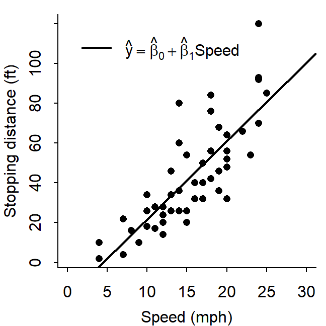
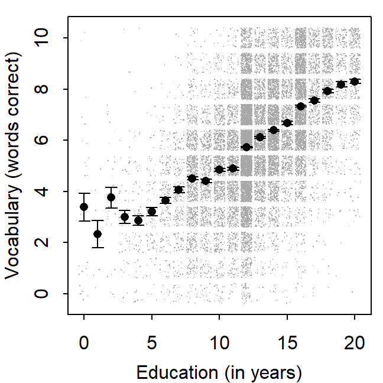
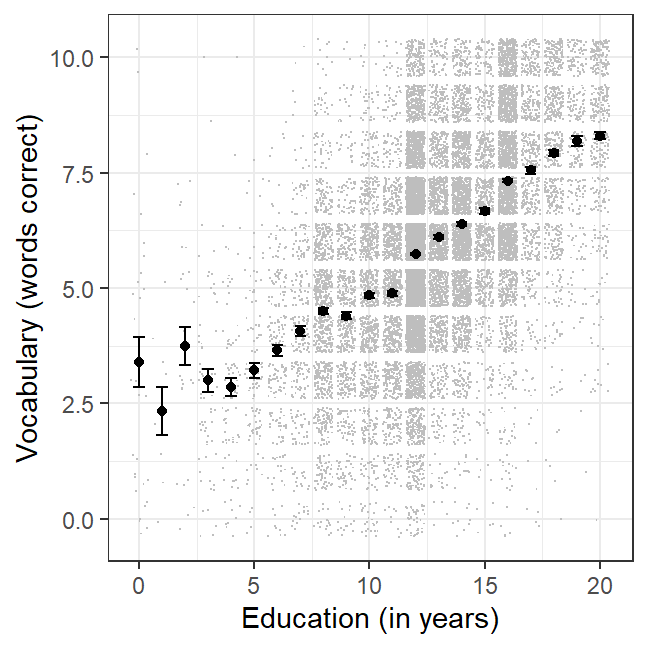
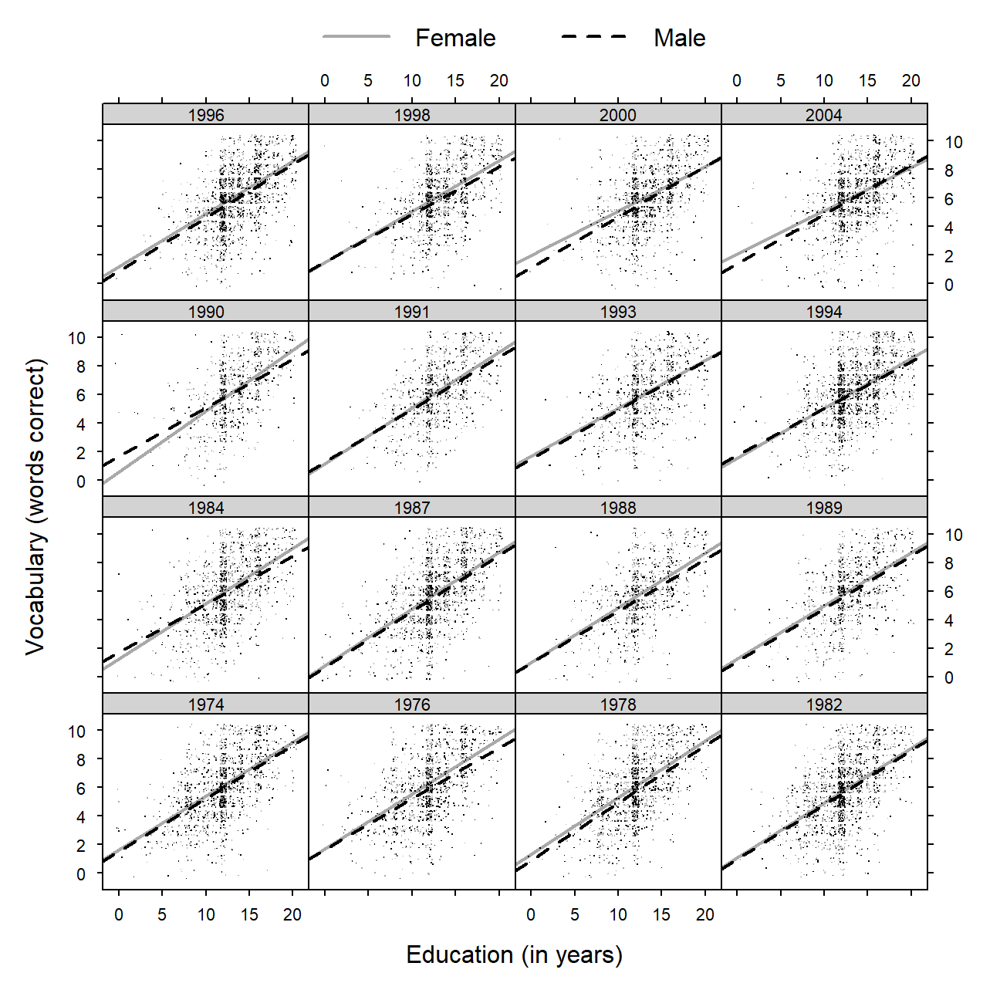
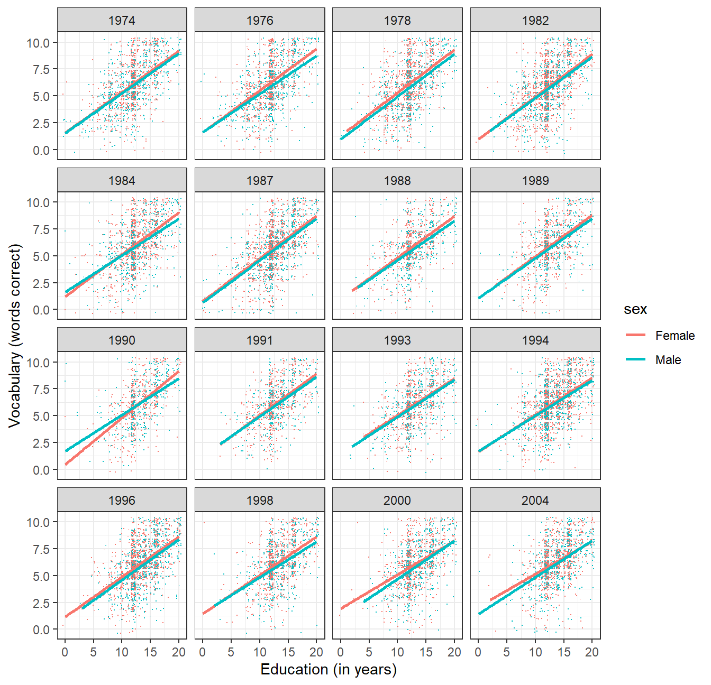
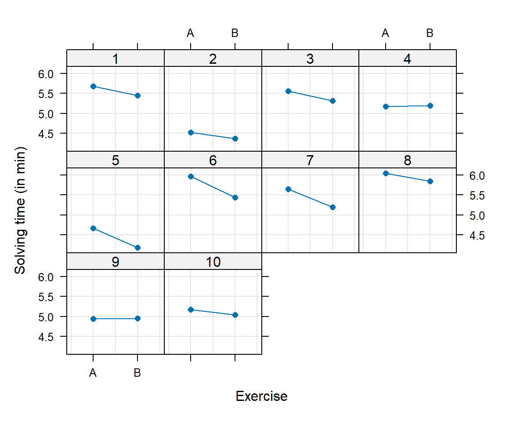
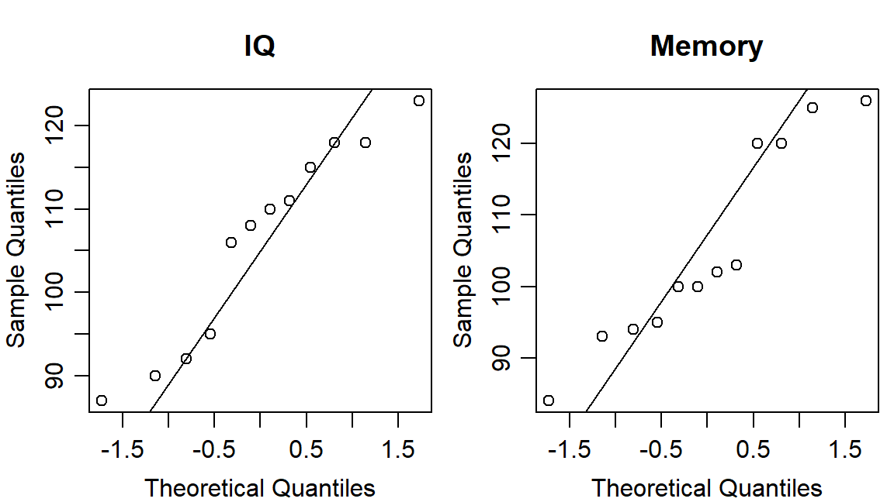
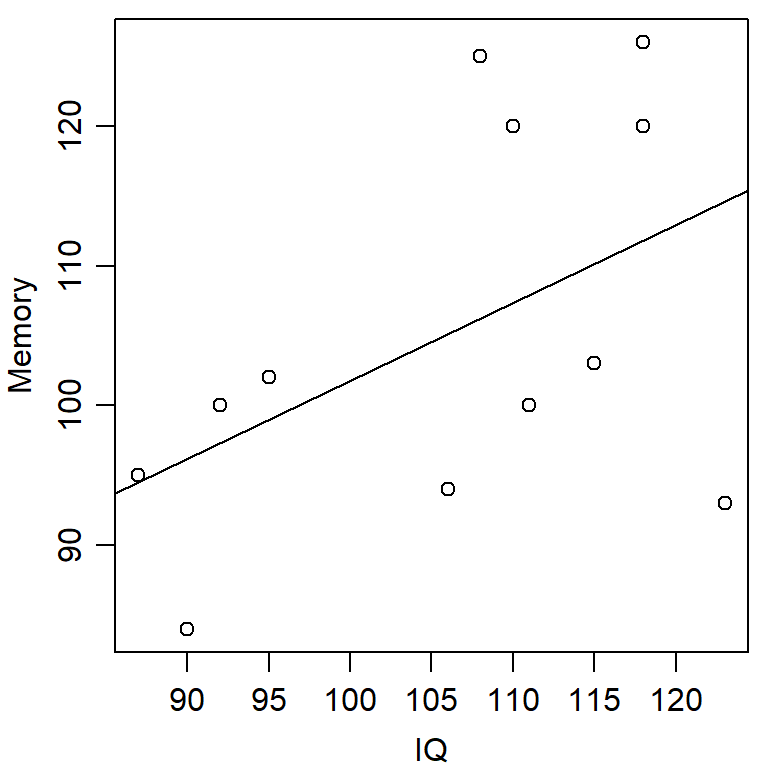

Chapter 10 Exercises Day 2
Write an executable and commented R script.
Load the built-in data set . Find out about the data with
?cars. Create a scatter plot of “Distance” as a function of “Speed.” Adjust the size of the margins (mai) and the spacing between labels and axes (mgp). Settype = "n"andaxes = FALSEand create the plot from scratch, step by step addingpoints(),axis(),legend(), etc.Export the plot to a png or pdf file. All labels should be readable, so reduce
widthandheightof the output device.par(mai = c(.6,.6,.15,.1), mgp = c(2,.7,0), tck = -.015) plot(cars, type = "n", axes = FALSE, xlim = c(0, 30), xlab = "Speed (mph)", ylab = "Stopping distance (ft)") points(cars, pch = 16) axis(side = 1) axis(side = 2) abline(lm(dist ~ speed, cars), lwd = 2) box(bty = "L") legend(0, 120, expression(hat(y) == hat(beta)[0] + hat(beta)[1] * Speed), lty = 1, lwd = 2, bty = "n")
Load
Vocabulary.txtinto R again. Make a scatter plot of “score in vocabulary test” as a function of “years of education.” Setpch = "."and use thejitter()function to actually see the structure in the data.Add the mean vocabulary score for each year of education to your plot. Use
aggregate()ortapply()to get these means. Add the standard errors (usearrows()).Export the plot to a file. Play with the graphical parameters. The goal is a publication-ready figure.
voc <- read.table("data/Vocabulary.txt", header = TRUE, stringsAsFactors = TRUE) # calculate standard errors vocm <- aggregate(vocabulary ~ education, voc, mean) vocm$sd <- aggregate(vocabulary ~ education, voc, sd)[,2] vocm$n <- aggregate(vocabulary ~ education, voc, length)[,2] vocm$se <- vocm$sd / sqrt(vocm$n) par(mai = c(.6,.6,.15,.1), mgp = c(2,.7,0), tck = -.015) plot(jitter(vocabulary, 2) ~ jitter(education, 2), voc, pch = ".", cex = .8, xlab = "Education (in years)", ylab = "Vocabulary (words correct)", col = "darkgrey") points(vocabulary ~ I(0:20), vocm, pch = 16) with(vocm, arrows(0:20, vocabulary + se, 0:20, vocabulary - se, angle = 90, length = .05, code = 3))
# Solution with ggplot() library(ggplot2) ggplot(data = vocm, mapping = aes(x = education, y = vocabulary)) + geom_jitter(data = voc, mapping = aes(x = education, y = vocabulary), pch=".", color = "gray") + labs(x = "Education (in years)", y = "Vocabulary (words correct)") + geom_point() + #geom_line() + geom_errorbar(aes(ymin = vocabulary - se, ymax = vocabulary + se), width = 0.5) + theme_bw()
Find out if there are sex differences in the relationship of “years of education” and “score in vocabulary test,” and if these differences depend on the year the test was taken in. Load the
latticepackage and use thexyplot()function. You can also use functions from theggplot2package. Hint: Make one scatter plot for each year of education with one regression line for men and one for women.library(lattice) voc$year <- factor(voc$year) xyplot(jitter(vocabulary, 2) ~ jitter(education, 2) | year, data = voc, groups = sex, type = c("p", "r"), col = c("darkgrey","black"), pch = ".", lwd = 2, xlab = "Education (in years)", ylab = "Vocabulary (words correct)", lty = 1:2, scales = list(tck = .5, cex = .7), par.strip.text = list(cex = .7), par.settings = list(strip.background = list(col = "lightgrey")), key = list(lines = list(lwd = 2, col = c("darkgrey", "black"), lty = 1:2), text = list(levels(voc$sex)), columns = 2) )
# Solution with ggplot() ggplot(data = voc, mapping = aes(x = education, y = vocabulary, color = sex)) + geom_jitter(pch=".") + labs(x = "Education (in years)", y = "Vocabulary (words correct)") + stat_smooth(method = "lm", se = FALSE) + theme_bw() + facet_wrap(vars(year))
Subjects are supposed to solve two mental exercises. Time needed will be measured in minutes. Between the two exercises subjects get a training which is supposed to enhance speed in solving these kind of mental exercises. Ten subjects are tested. The following table shows the solving times:
dat <- data.frame( Vp = 1:10, A = c(5.68, 4.52, 5.56, 5.17, 4.67, 5.97, 5.65, 6.04, 4.94, 5.17), B = c(5.45, 4.37, 5.31, 5.19, 4.18, 5.44, 5.19, 5.84, 4.95, 5.04) )Subj Exercise A Exercise B 1 5.68 5.45 2 4.52 4.37 3 5.56 5.31 4 5.17 5.19 5 4.67 4.18 6 5.97 5.44 7 5.65 5.19 8 6.04 5.84 9 4.94 4.95 10 5.17 5.04 - Create a data frame that contains the depicted variables. Use the
function
reshape()to transform the data frame to the “long” format.
dat2 <- reshape(dat, idvar = "Vp", timevar = "Aufg", varying = list(2:3), v.names = "Lzeit", direction = "long") dat2$Vp <- factor(dat2$Vp) dat2$Aufg <- factor(dat2$Aufg, labels = c("A", "B")) rownames(dat2) <- NULL- Plot the solving time for each subject depending on the exercise (one
panel per person). Use
xyplot()from thelatticepackage. Export your graphic as a png or pdf file.
xyplot(Lzeit ~ Aufg | Vp, dat2, as.table = TRUE, type = c("g", "b"), pch = 16, xlab = "Exercise", ylab = "Solving time (in min)")
- Check if the solving times differ for both exercises using a Wilcoxon test (\(\alpha = 0.05\)).
with(dat2, wilcox.test(Lzeit[Aufg == "A"], Lzeit[Aufg == "B"], paired = TRUE))## ## Wilcoxon signed rank exact test ## ## data: Lzeit[Aufg == "A"] and Lzeit[Aufg == "B"] ## V = 52, p-value = 0.009766 ## alternative hypothesis: true location shift is not equal to 0- Check the same hypothesis using a \(t\) test (\(\alpha = 0.05\)).
with(dat2, t.test(Lzeit[Aufg == "A"], Lzeit[Aufg == "B"], paired = TRUE))## ## Paired t-test ## ## data: Lzeit[Aufg == "A"] and Lzeit[Aufg == "B"] ## t = 3.8808, df = 9, p-value = 0.003727 ## alternative hypothesis: true mean difference is not equal to 0 ## 95 percent confidence interval: ## 0.1005174 0.3814826 ## sample estimates: ## mean difference ## 0.241- Create a data frame that contains the depicted variables. Use the
function
For \(n = 12\) subjects, intelligence (variable \(X\)) and memory performance (variable \(Y\)) have been measured. The following value pairs were obtained:
dat <- data.frame( Vp = 1:12, int = c(106, 92, 90, 118, 87, 123, 118, 115, 111, 95, 110, 108), mem = c(94, 100, 84, 126, 95, 93, 120, 103, 100, 102, 120, 125) )\(X\) 106 92 90 118 87 123 118 115 111 95 110 108 \(Y\) 94 100 84 126 95 93 120 103 100 102 120 125 Create a data frame for these data.
Check the normality assumption separately for each variable using quantile-quantile plots. Interpret the results.
Plot memory performance depending on intelligence in a scatter plot and add a regression line. Export your graphic as a png or pdf file.
Check the hypothesis \(\rho_{XY} = 0\) (if \(X\) and \(Y\) are uncorrelated) using an appropriate statistical test (\(\alpha = 0.05\)).
par(mfrow = c(1, 2), mai = c(.6, .6, .6, .1), mgp = c(2, .7, 0)) qqnorm(dat$int, main = "IQ") qqline(dat$int) qqnorm(dat$mem, main = "Memory") qqline(dat$mem)
par(mai = c(.6, .6, .1, .1), mgp = c(2, .7, 0)) plot(mem ~ int, dat, xlab = "IQ", ylab = "Memory") abline(lm(mem ~ int, dat))
cor.test(~ int + mem, dat, method = "pearson")## ## Pearson's product-moment correlation ## ## data: int and mem ## t = 1.7586, df = 10, p-value = 0.1091 ## alternative hypothesis: true correlation is not equal to 0 ## 95 percent confidence interval: ## -0.1218673 0.8287609 ## sample estimates: ## cor ## 0.4860269